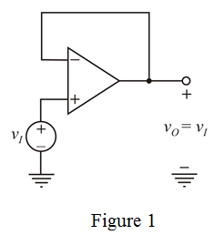

Consider the op-amp is ideal except for having a finite gain .
.
The voltage gain of non-inverting amplifier for ideal case is,
The voltage gain of non-inverting amplifier, when op-amp having a finite gain  is,
is,
…… (1)
Refer to Figure 2.14 in the textbook.
Re-draw the circuit diagram.

Consider the op-amp is ideal except for having a finite gain.
The voltage gain of non-inverting amplifier for ideal case is,
The voltage gain of non-inverting amplifier, when op-amp having a finite gain is,
…… (1)
From Figure 1, the value of feedback is zero and input resistance is infinity.
Substitute 1 for  in equation (1).
in equation (1).
…… (2)
For , determine the voltage gain of the amplifier.
Therefore, the voltage gain of the amplifier is .
Determine the percentage error in gain.
Therefore, the percentage error in voltage gain is .
For , determine the voltage gain of the amplifier.
Therefore, the voltage gain of the amplifier is .
Determine the percentage error in gain.
Therefore, the percentage error in voltage gain is .
For , determine the voltage gain of the amplifier.
Therefore, the voltage gain of the amplifier is .
Determine the percentage error in gain.
Therefore, the percentage error in voltage gain is .